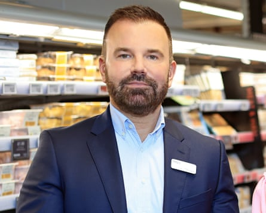

The boss of Marks & Spencer has called on the government to rapidly reset relations with the EU and criticised new rules which demand extra checks and labelling on products headed from the UK mainland to Northern Ireland as “bureaucratic madness”.
Stuart Machin, the chief executive of M&S, which has 25 stores in Northern Ireland, said that from next week the retailer would have to label 1,000 more products destined for the UK country with “not for EU” while another 400 items would require “additional checks”.
The “not for EU” labelling is designed to prevent products intended for sale in Northern Ireland being moved to the Republic of Ireland, which is an EU member.
In a post on X, he said the change in rules added “yet another layer of unnecessary costs and red tape for food retailers like M&S”.
“Quite frankly it’s bureaucratic madness, confusing for customers, and completely unnecessary given the UK has some of the highest food standards in the world.”
The changes come before the implementation of a new deal between the government and the EU to remove the need for health and veterinary certification, known as sanitary and phytosanitary checks (SPS), on exports of farm products ranging from fresh meat and dairy products to vegetables, timber, wool and leather. The details of the deal, which was part of a major reset in EU-UK relations announced in May, are still being thrashed out and experts believe this could take up to a year.
Stuart Machin called on the government to rapidly reset relations with the EU.Photograph: Oliver Dixon/PA
Earlier this month the government said that before the final deal, it was scrapping plans to introduce checks this summer on EU imports of “medium-risk fruit and vegetables”, such as tomatoes, peppers, grapes, plums and cherries.
Machin said “The government’s SPS deal with the EU will be gamechanging, and it can’t come soon enough!”
From 1 July the final phase of the Windsor framework, which was designed to protect the EU single market and stop British goods leaking into the bloc via the Republic of Ireland, comes into force, requiring some goods to hold the “not for the EU” labels.
The deal was a compromise to obviate the need for some border checks on fresh foods such as sausages.
Some unpackaged fruit and vegetables and items such as confectionery, chocolate, pasta, biscuits and coffee are exempt.
Until now, the “not for EU” labelling requirement applied only to meat and some fresh dairy products.
The Windsor framework , which tweaked the Brexit arrangements that created the Irish Sea trade border, came into force in March 2023. Most large businesses were able to ease the flow of their goods a few months later when a trusted-trader scheme was launched.
In May 2021, a few months after Brexit was implemented, Marks & Spencer said the changes in trade arrangement had added about £30m of costs to its dealings with the island of Ireland. It has since changed some ways of working and sources of supply.